{kind=link}

title: ‘跨考小白学刷题(下)’
date: 2021-11-12 13:56:19
categories: 跨考小白学刷题
mathjax: True
cover: https://www.cdnjson.com/images/2021/11/21/1_VJNqt2qR5keOZ_ukx8fmwA.jpg
排列问题


我自己(在看了答案后默)写的AC代码：
class Solution:
def permute(self, nums: List[int]) -> List[List[int]]:
if not nums:
return []
def back_track(nums,index):
if index==len(nums):
res.append(p[:])#必须加这个:，因为path之后还会变
return
for num in nums:
if num not in p:
p.append(num)
back_track(nums,index+1)
p.pop()
res=[]
p=[]#存储临时结果
back_track(nums,0)
return res
课后习题：

有些难理解，就先记住对数层去重的代码吧。
记住先排序，方便去重。
用used：
class Solution:
def permuteUnique(self, nums: List[int]) -> List[List[int]]:
# res用来存放结果
if not nums:
return []
res = []
used = [0] * len(nums)
def backtracking(nums, used, path):
# 终止条件
if len(path) == len(nums):
res.append(path.copy())
return
for i in range(len(nums)):
if not used[i]:
if i>0 and nums[i] == nums[i-1] and not used[i-1]:
continue
used[i] = 1
path.append(nums[i])
backtracking(nums, used, path)
path.pop()
used[i] = 0
# 记得给nums排序
backtracking(sorted(nums),used,[])
return res
组合问题
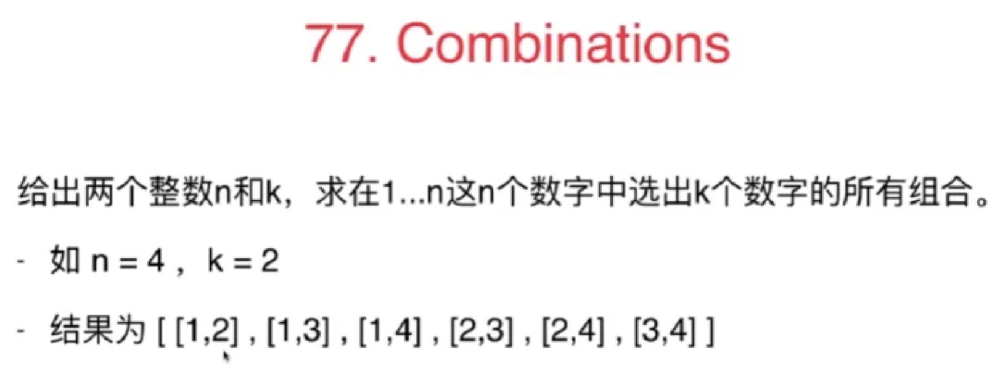

我在排列问题代码上改了下：
class Solution:
def combine(self, n: int, k: int) -> List[List[int]]:
if n<k or k<=0 or n<=0:
return []
def back_track(n,k,index):
if len(p)==k:
res.append(p[:])#必须加这个:，因为path之后还会变
return
for i in range(index,n+1):
p.append(i)
back_track(n,k,i+1)
p.pop()
res=[]
p=[]#存储临时结果
back_track(n,k,1)
return res
以上代码可以剪枝，具体地，可供选择的数字个数应该不小于k-len(p)+1个，否则无法再凑成k个数字，所以只需改一下for即可：
class Solution:
def combine(self, n: int, k: int) -> List[List[int]]:
if n<k or k<=0 or n<=0:
return []
def back_track(n,k,index):
if len(p)==k:
res.append(p[:])#必须加这个:，因为path之后还会变
return
for i in range(index,n-(k-len(p))+1+1):
p.append(i)
back_track(n,k,i+1)
p.pop()
res=[]
p=[]#存储临时结果
back_track(n,k,1)
return res
剪枝后，用时肉眼可见的下降
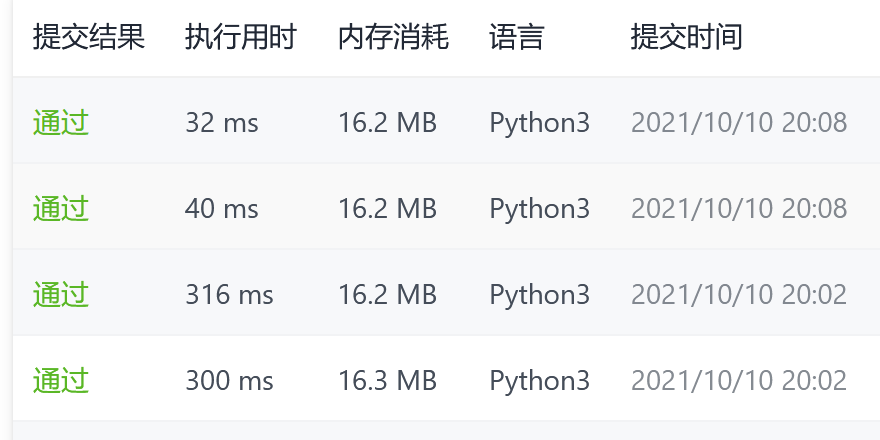
课后习题
先画出递归树：
修修改改，还是有些错误，没有加index排除重复项，如[2,2,3]和[2,3,2]，修改后代码如下：
class Solution:
def combinationSum(self, candidates: List[int], target: int) -> List[List[int]]:
if not candidates or target<=0:
return []
def back_track(candidates,index):
if sum(p)==target:
res.append(p[:])#必须加这个:，因为path之后还会变
return
for i in range(index,len(candidates)):
p.append(candidates[i])
print(p)
#剪枝
if sum(p)<=target:
back_track(candidates,i)
p.pop()
res=[]
p=[]#存储临时结果
back_track(candidates,0)
return res
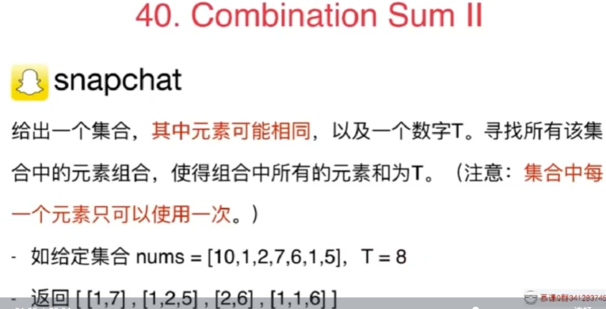
这题要求不重复使用，也就是要去重的是同一树层上的“使用过”，同一树枝上的都是一个组合里的元素，不用去重。
强调一下，树层去重的话，需要对数组排序！


直接用startIndex判断简洁些：
class Solution:
def combinationSum2(self, candidates: List[int], target: int) -> List[List[int]]:
if not candidates or target<=0:
return []
def back_track(candidates,index):
if sum(p)==target:
res.append(p[:])#必须加这个:，因为path之后还会变
return
for i in range(index,len(candidates)):
if i > index and candidates[i] == candidates[i-1]:
continue #直接用startIndex来去重,要对同一树层使用过的元素进行跳过
p.append(candidates[i])
print(p)
#剪枝
if sum(p)<=target:
back_track(candidates,i+1)#i+1:每个数字在每个组合中只能使用一次
p.pop()
res=[]
p=[]#存储临时结果
candidates = sorted(candidates)#需要排序！
back_track(candidates,0)
return res
用used的：
class Solution:
def combinationSum2(self, candidates: List[int], target: int) -> List[List[int]]:
if not candidates or target<=0:
return []
used = [0] * len(candidates)
def back_track(candidates,index):
if sum(p)==target:
res.append(p[:])#必须加这个:，因为path之后还会变
return
for i in range(index,len(candidates)):
if not used[i]:
if i>0 and candidates[i] == candidates[i-1] and not used[i-1]:
continue
used[i]=1
p.append(candidates[i])
# 剪枝
if sum(p)<=target:
back_track(candidates,i+1)#i+1:每个数字在每个组合中只能使用一次
p.pop()
used[i]=0
res=[]
p=[]#存储临时结果
candidates = sorted(candidates)#需要排序！
back_track(candidates,0)
return res
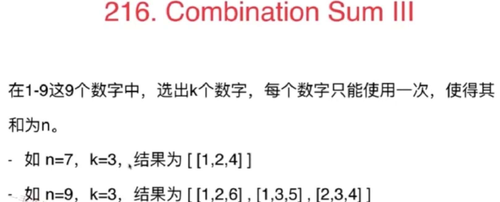
在经历了前面那些题后，终于自己写出来一道：
class Solution:
def combinationSum3(self, k: int, n: int) -> List[List[int]]:
nums=[i for i in range(1,10)]
def back_track(index):
if len(p)==k and sum(p)==n:
res.append(p[:])
return
for i in range(index,len(nums)):
p.append(nums[i])
if len(p)<=k and sum(p)<=n:
back_track(i+1)
p.pop()
res=[]
p=[]
back_track(0)
return res
感觉和前面的很像，只是加了个判断len(p)是否等于k的条件。
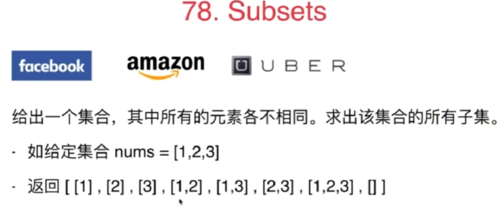
class Solution:
def subsets(self, nums: List[int]) -> List[List[int]]:
if not nums:
return []
#排列和组合问题的结果在叶子结点，而子集的在每个结点
def back_track(index):
for i in range(index,len(nums)):
p.append(nums[i])
res.append(p[:])
back_track(i+1)
p.pop()
res=[]
p=[]
back_track(0)
return res+[[]]
还是写成和之前统一的格式比较好：
class Solution:
def subsets(self, nums: List[int]) -> List[List[int]]:
if not nums:
return []
#排列和组合问题的结果在叶子结点，而子集的在每个结点
def back_track(index):
if 0<len(p)<=len(nums):
res.append(p[:])
#不用return，因为还要向下处理，并没有到叶子结点
for i in range(index,len(nums)):
p.append(nums[i])
back_track(i+1)
p.pop()
res=[]
p=[]
back_track(0)
return res+[[]]
也可以不单独处理[]，更统一了:
class Solution:
def subsets(self, nums: List[int]) -> List[List[int]]:
if not nums:
return []
#排列和组合问题的结果在叶子结点，而子集的在每个结点
def back_track(index):
if len(p)<=len(nums):
res.append(p[:])
for i in range(index,len(nums)):
p.append(nums[i])
back_track(i+1)
p.pop()
res=[]
p=[]
back_track(0)
return res
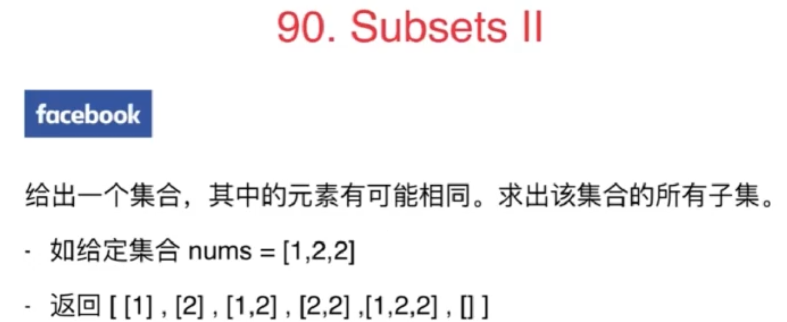
加个used数组判断是否重复，注意先排序。
这和之前一样，套着模板就写出来了：
class Solution:
def subsetsWithDup(self, nums: List[int]) -> List[List[int]]:
if not nums:
return []
used=[0]*len(nums)
#排列和组合问题的结果在叶子结点，而子集的在每个结点
def back_track(nums,index):
if len(p)<=len(nums):
res.append(p[:])
for i in range(index,len(nums)):
if used[i]==0:
if i>0 and nums[i]==nums[i-1] and not used[i-1]:
continue
used[i]=1
p.append(nums[i])
back_track(nums,i+1)
p.pop()
used[i]=0
res=[]
p=[]
back_track(sorted(nums),0)
return res
二维平面上的回溯法。
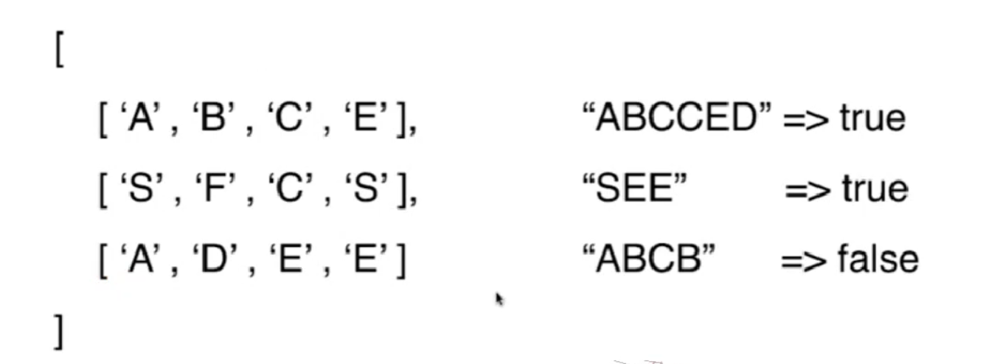
递归树：
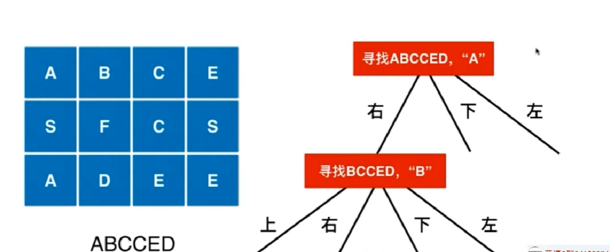


改写成Python版本：
注意x向下，y向右
class Solution:
#入口
def exist(self, board: List[List[str]], word: str) -> bool:
#从board[startx][starty]开始，寻找word[index...len(word)]
def searchWord(board,word,index,startx,starty):
if index==len(word)-1:
return board[startx][starty]==word[index]
if board[startx][starty]==word[index]:
visited[startx][starty]=True
#从startx,starty出发，向四个方向寻找
for i in range(4):
newx=startx+d[i][0]
newy=starty+d[i][1]
if self.inArea(newx,newy,n,m) and not visited[newx][newy]:
if searchWord(board,word,index+1,newx,newy):
return True
visited[startx][starty]=False
else:
return False
d=[[-1,0],[0,1],[1,0],[0,-1]]
n,m=len(board),len(board[0])
visited = [[False for _ in range(m)] for _ in range(n)]
for i in range(n):
for j in range(m):
if searchWord(board,word,0,i,j):
return True
return False
#判断来到的新位置是否越界
def inArea(self,x,y,n,m):
return 0<=x<n and 0<=y<m
改一点点：
class Solution:
#入口
def exist(self, board: List[List[str]], word: str) -> bool:
#从board[startx][starty]开始，寻找word[index...len(word)]
def searchWord(board,word,index,startx,starty):
if index==len(word)-1:
return board[startx][starty]==word[index]
if board[startx][starty]==word[index]:
visited[startx][starty]=1
#从startx,starty出发，向四个方向寻找
for i in range(4):
newx=startx+d[i][0]
newy=starty+d[i][1]
if 0<=newx<m and 0<=newy<n and not visited[newx][newy]:
if searchWord(board,word,index+1,newx,newy):
return True
visited[startx][starty]=0
else:
return False
d=[[-1,0],[0,1],[1,0],[0,-1]]
m,n=len(board),len(board[0])
visited = [[0 for _ in range(n)] for _ in range(m)]
for i in range(m):
for j in range(n):
if searchWord(board,word,0,i,j):
return True
return False
如果没有要求不能修改原数组，那么不需要visited：
class Solution:
#入口
def exist(self, board: List[List[str]], word: str) -> bool:
#从board[startx][starty]开始，寻找word[index...len(word)]
def searchWord(board,word,index,startx,starty):
if index==len(word)-1:
return board[startx][starty]==word[index]
if board[startx][starty]==word[index]:
#visited[startx][starty]=1
board[startx][starty]=''
#从startx,starty出发，向四个方向寻找
for i in range(4):
newx=startx+d[i][0]
newy=starty+d[i][1]
if self.inArea(newx,newy,m,n):
if searchWord(board,word,index+1,newx,newy):
return True
#visited[startx][starty]=0
board[startx][starty]=word[index]
else:
return False
d=[[-1,0],[0,1],[1,0],[0,-1]]
m,n=len(board),len(board[0])
visited=[[0]*n]*m
for i in range(m):
for j in range(n):
if searchWord(board,word,0,i,j):
return True
return False
#判断来到的新位置是否越界
def inArea(self,x,y,m,n):
return x>=0 and x<m and y>=0 and y<n
floodfill算法
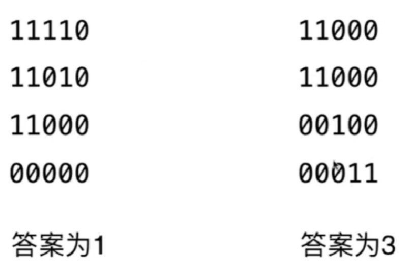


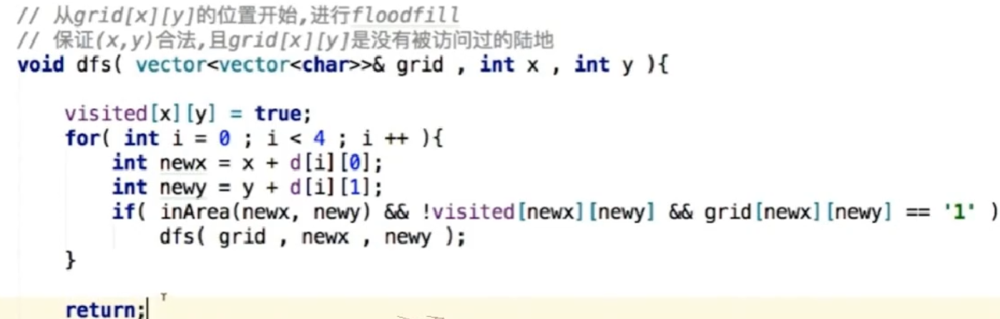
不需要重置visited状态，因为最终目标就是将所有与grid[i][j]连通的岛屿全部置为True(已访问)状态。
改写成Python版本：
class Solution:
def numIslands(self, grid: List[List[str]]) -> int:
m=len(grid)
if m==0:
return 0
n=len(grid[0])
visited=[[False]*n for _ in range(m)]
def dfs(grid,x,y):
visited[x][y]=True
for d in [[0,1],[1,0],[0,-1],[-1,0]]:
newx=x+d[0]
newy=y+d[1]
if 0<=newx<m and 0<=newy<n and not visited[newx][newy] and grid[newx][newy]=='1' :
dfs(grid,newx,newy)
return
res=0
for i in range(m):
for j in range(n):
if grid[i][j]=='1' and not visited[i][j]:
res+=1
dfs(grid,i,j)
return res
题目没要求不能修改grid，所以可以不用visited：
class Solution:
def numIslands(self, grid: List[List[str]]) -> int:
m=len(grid)
if m==0:
return 0
n=len(grid[0])
def dfs(grid,x,y):
grid[x][y]='0'
for d in [[0,1],[1,0],[0,-1],[-1,0]]:
newx=x+d[0]
newy=y+d[1]
if 0<=newx<m and 0<=newy<n and grid[newx][newy]=='1':
dfs(grid,newx,newy)
return
res=0
for i in range(m):
for j in range(n):
if grid[i][j]=='1':
res+=1
dfs(grid,i,j)
return res
课后习题
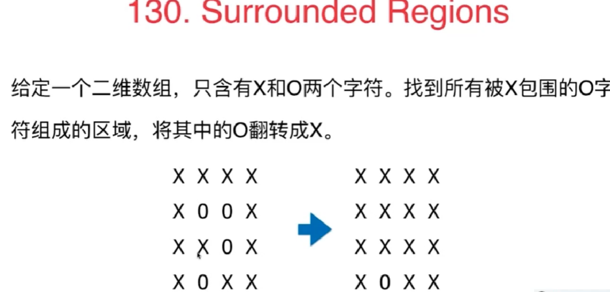
看评论区大佬的解法
这道题的突破口就在于：
任何不在边界上，或不与边界上的 'O' 相连的 'O' 最终都会被填充为 'X'。
那么，我们只要找到四周边界上存在O且与这些O连接着的O，在搜索时先修改成其他字母，比如“#”。
然后遍历二维矩阵，将为O修改为X，将#修改为O即可。
class Solution:
def solve(self, board: List[List[str]]) -> None:
"""
Do not return anything, modify board in-place instead.
"""
m=len(board)
n=len(board[0])
#递归函数：找到四周边界上存在O且与这些O连接着的O,将其改为'#'
def dfs(board,x,y):
if board[x][y]!='O':
return
else:
board[x][y]='#'
for d in [[0,1],[1,0],[0,-1],[-1,0]]:
newx=x+d[0]
newy=y+d[1]
if 0<=newx<m and 0<=newy<n:
dfs(board,newx,newy)
#开始行动：找到四周边界上存在O且与这些O连接着的O,将其改为'#'
for i in range(m):
dfs(board,i,0)
dfs(board,i,n-1)
for j in range(n):
dfs(board,0,j)
dfs(board,m-1,j)
for i in range(m):
for j in range(n):
#把'#'改回'O'
if board[i][j]=='#':
board[i][j]='O'
#把'X'或'O'（这些'O'全被'X'包围了）改成'X'
else:
board[i][j]='X'
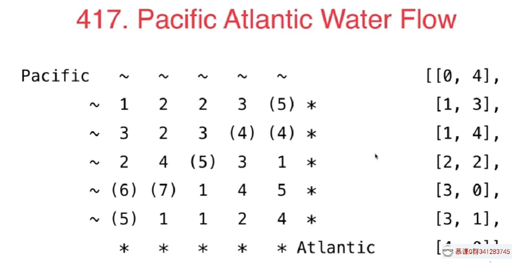
评论区大佬：水往高处流。
对于一个点它能流动两边的大洋，那么反过来，两边大洋的水反着流就能达到这个点。
既然水开始倒流了，那么逻辑也需要反过来，因此只有将下一个点比当前的点大时或者等于当前点的高度时，水才能流过去。
找出所有这样的点我们需要怎么做？


Python代码如下，根据大佬的代码，我改成了熟悉的格式：
class Solution:
def pacificAtlantic(self, heights: List[List[int]]) -> List[List[int]]:
m=len(heights)
n=len(heights[0])
pac=[[0]*n for _ in range(m)]
atl=[[0]*n for _ in range(m)]
res=[]
def dfs(heights, visited, row, col):
if visited[row][col]:
return
visited[row][col]=1
#从太平洋或大西洋都能到达,是解
if (pac[row][col] and atl[row][col]):
res.append([row,col])
for d in [[0,1],[1,0],[0,-1],[-1,0]]:
newx=row+d[0]
newy=col+d[1]
if 0<=newx<m and 0<=newy<n and heights[newx][newy]>=heights[row][col]:
dfs(heights,visited,newx,newy)
return
for i in range(m):
dfs(heights, pac, i, 0)
dfs(heights, atl, i, n-1)
for j in range(n):
dfs(heights, pac, 0, j)
dfs(heights, atl, m-1, j)
return res
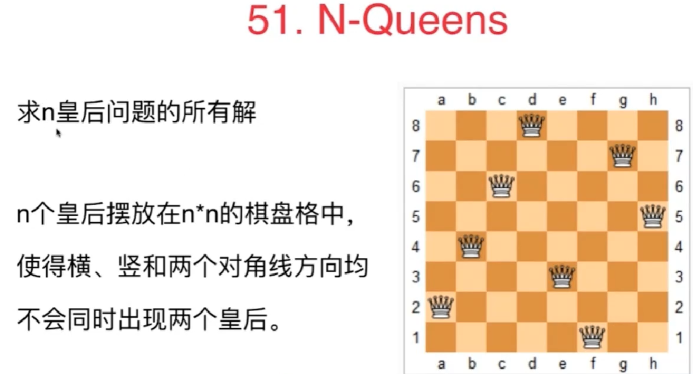
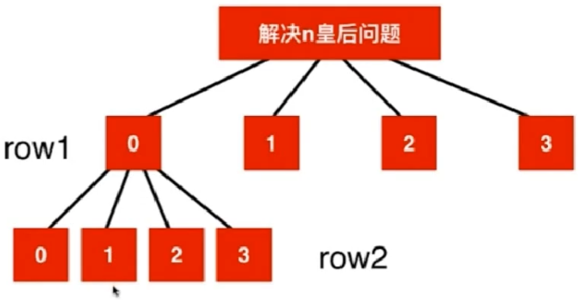
以斐波那契为例，


递归树：
记忆化搜索：
class Solution:
def climbStairs(self, n: int) -> int:
def search(n):
if n==1:
return 1
if n==2:
return 2
if memo[n]==-1:
memo[n]=search(n-1)+search(n-2)
return memo[n]
memo=[-1]*(n+1)
res=search(n)
return res
or
class Solution:
def climbStairs(self, n: int) -> int:
def search(n):
if n==1:
return 1
if n==2:
return 2
if memo[n-1]==-1:
memo[n-1]=search(n-1)+search(n-2)
return memo[n-1]
memo=[-1]*n
res=search(n)
return res
动态规划：
class Solution:
def climbStairs(self, n: int) -> int:
memo=[-1]*(n+1)
memo[0]=1
memo[1]=1
for i in range(2,n+1):
memo[i]=memo[i-1]+memo[i-2]
return memo[n]
课后习题
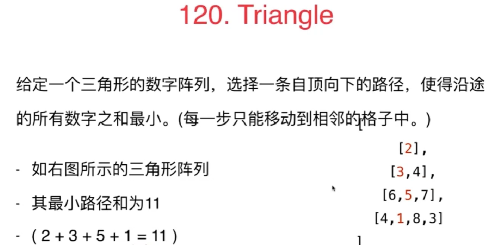
每一步只能移动到下一行中相邻的结点上。相邻的结点 在这里指的是 下标 与 上一层结点下标 相同或者等于 上一层结点下标 + 1 的两个结点。也就是说，如果正位于当前行的下标 i ，那么下一步可以移动到下一行的下标 i 或 i + 1 。
我直接暴力递归，结果超时了：
class Solution:
def minimumTotal(self, triangle: List[List[int]]) -> int:
def search(triangle,row,col):
if row>=len(triangle):
return 0
return triangle[row][col]+min(search(triangle,row+1,col),search(triangle,row+1,col+1))
res=search(triangle,0,0)
return res
改成自顶向下的记忆化搜索，过了：
class Solution:
def minimumTotal(self, triangle: List[List[int]]) -> int:
def search(triangle,row,col):
if row>=len(triangle):
return 0
if memo[row][col]=='#':
memo[row][col]=triangle[row][col]+min(search(triangle,row+1,col),search(triangle,row+1,col+1))
return memo[row][col]
memo=[['#']*len(triangle)for i in range(len(triangle))]
res=search(triangle,0,0)
return res
下面是动态规划解法：
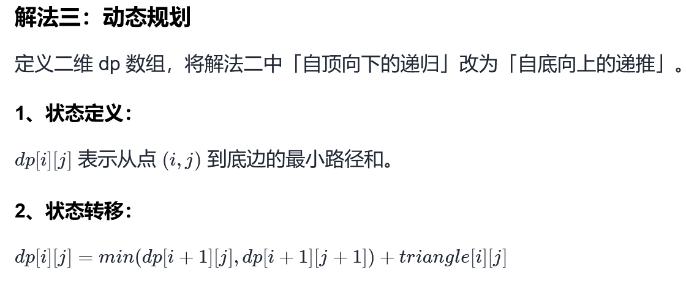
class Solution:
def minimumTotal(self, triangle: List[List[int]]) -> int:
#dp[i][j] 表示从点 (i, j) 到底边的最小路径和。
# 多定义一行一列（默认初始值 0），就不用判断边界了，动态规划常用方法
dp=[[0]*(len(triangle)+1) for _ in range(len(triangle)+1)]
#自下而上，从左往右，遍历三角形所有位置
for i in range(len(triangle)-1,-1,-1):#行
for j in range(0,i+1,1):#列
dp[i][j]=triangle[i][j]+min(dp[i+1][j],dp[i+1][j+1])
return dp[0][0]
上述动态规划空间还可以优化：

class Solution:
def minimumTotal(self, triangle: List[List[int]]) -> int:
##空间优化后，dp[j] 表示从当前层第 j-1 个元素到最底层的最小路径和。
dp=[0]*(len(triangle)+1)
for i in range(len(triangle)-1,-1,-1):#行
for j in range(0,i+1,1):#列
dp[j]=triangle[i][j]+min(dp[j],dp[j+1])
return dp[0]

说明：每次只能向下或者向右移动一步。
我写的回溯，小样例通过，维度稍微大些就超时了：
class Solution:
def minPathSum(self, grid: List[List[int]]) -> int:
def move(grid,x,y):
if x==m-1 and y==n-1:
path.append(grid[x][y])
res.append(path[:])
return
path.append(grid[x][y])
for d in [[0,1],[1,0]]:#向右/下,原点在左上方
newx=x+d[0]
newy=y+d[1]
if 0<=newx<m and 0<=newy<n:
move(grid,newx,newy)
path.pop()
m,n=len(grid),len(grid[0])
path=[]
res=[]
move(grid,0,0)
print(res)
return min([sum(c) for c in res])
动态规划：
状态定义：
设 dp 为大小 m×n 矩阵，dp[i][j] 表示从左上角出发到 (i,j) 位置的最小路径和。
转移方程：
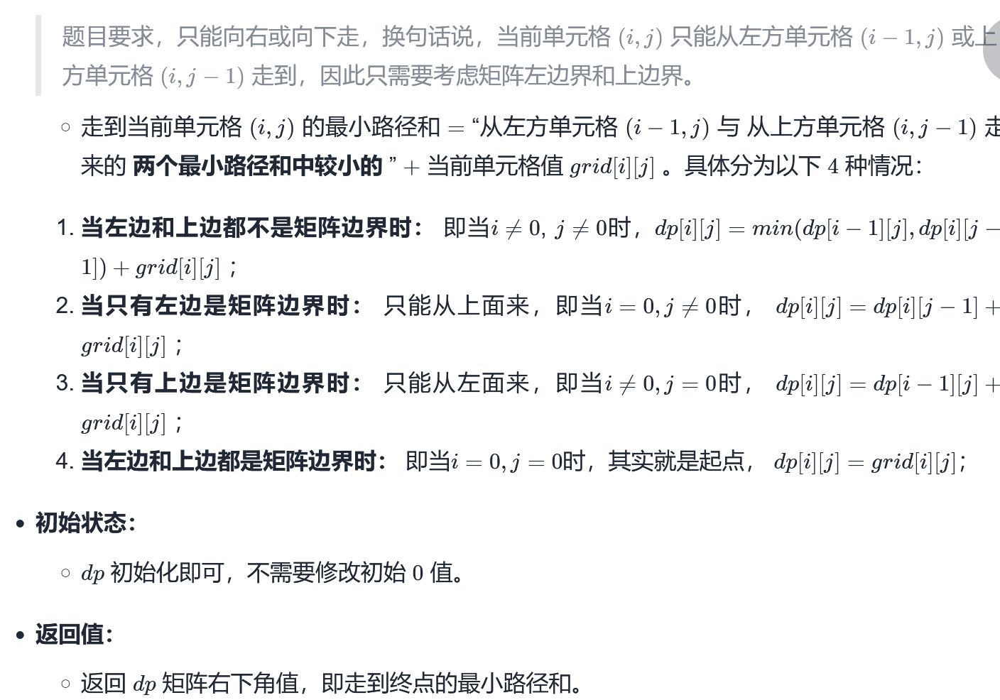
官方：
class Solution:
def minPathSum(self, grid: List[List[int]]) -> int:
if not grid or not grid[0]:
return 0
rows, columns = len(grid), len(grid[0])
dp = [[0] * columns for _ in range(rows)]
dp[0][0] = grid[0][0]
for i in range(1, rows):
dp[i][0] = dp[i - 1][0] + grid[i][0]
for j in range(1, columns):
dp[0][j] = dp[0][j - 1] + grid[0][j]
for i in range(1, rows):
for j in range(1, columns):
dp[i][j] = min(dp[i - 1][j], dp[i][j - 1]) + grid[i][j]
return dp[rows - 1][columns - 1]
更简洁：
class Solution:
def minPathSum(self, grid: [[int]]) -> int:
m,n=len(grid),len(grid[0])
#dp[i][j]的值代表从左上角直到走到 (i,j)位置的最小路径和
dp=[[0]*n]*m
dp[0][0]=grid[0][0]
for i in range(m):
for j in range(n):
if i == j == 0:
continue
elif i == 0:
dp[i][j] = dp[i][j - 1] + grid[i][j]
elif j == 0:
dp[i][j] = dp[i - 1][j] + grid[i][j]
else:
dp[i][j] = min(dp[i - 1][j], dp[i][j - 1]) + grid[i][j]
return dp[m-1][n-1]
其实我们完全不需要建立 dp 矩阵浪费额外空间，直接遍历 grid[i][j]修改即可。这是因为：grid[i][j] = min(grid[i - 1][j], grid[i][j - 1]) + grid[i][j] ；原 grid矩阵元素中被覆盖为 dp元素后（都处于当前遍历点的左上方），不会再被使用到。
class Solution:
def minPathSum(self, grid: [[int]]) -> int:
for i in range(len(grid)):
for j in range(len(grid[0])):
if i == j == 0: continue
elif i == 0: grid[i][j] = grid[i][j - 1] + grid[i][j]
elif j == 0: grid[i][j] = grid[i - 1][j] + grid[i][j]
else: grid[i][j] = min(grid[i - 1][j], grid[i][j - 1]) + grid[i][j]
return grid[-1][-1]
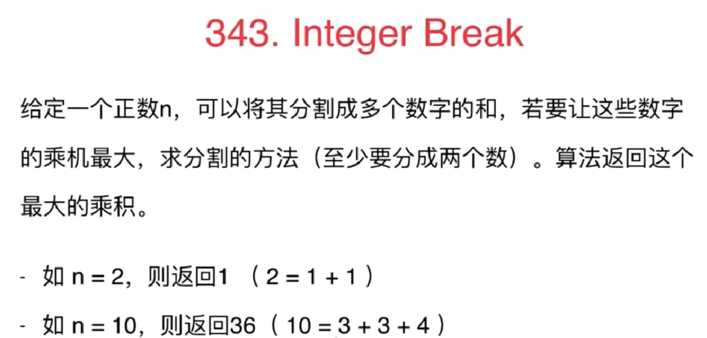
暴力解法：回溯遍历将一个数做分割的所有可能性：O(2^n)
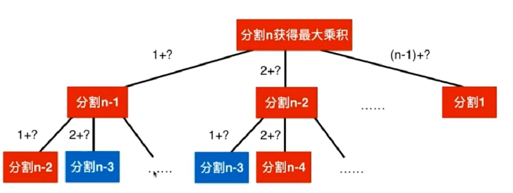
根据上面的递归树，改写Python代码：
class Solution:
def integerBreak(self, n: int) -> int:
#将n进行分割(至少分割成两部分)，可以获得的最大乘积
def help(n):
if n==1:
return 1
res=-1
for i in range(1,n):
#i*(n-1)：不继续拆分了
#i*help(n-i)：继续拆分
res=max(res,i*(n-i),i*help(n-i))
return res
return help(n)
上面存在大量的重复运算，提交超时。
开始优化
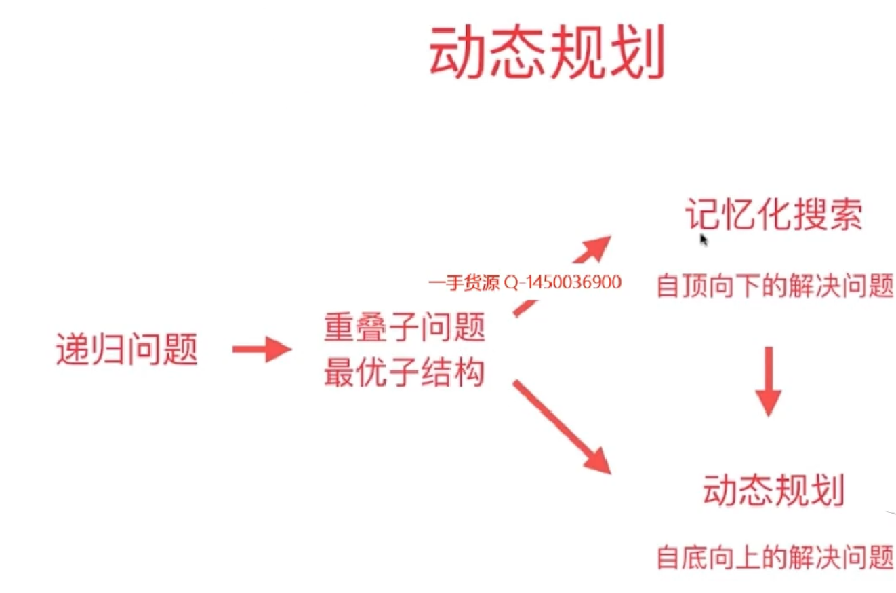
记忆化搜索：
class Solution:
def integerBreak(self, n: int) -> int:
def help(n):
if n==1:
return 1
if memo[n]!=-1:
return memo[n]
res=-1
for i in range(1,n):
#i*(n-1)：不继续拆分了
#i*help(n-i)：继续拆分
res=max(res,i*(n-i),i*help(n-i))
memo[n]=res
return res
memo=[-1]*(n+1)
return help(n)
这样就能通过了。
动态规划：
class Solution:
def integerBreak(self, n: int) -> int:
memo=[-1]*(n+1)
memo[1]=1
#memo[i]表示将数字i分割(至少分割成两部分)后得到的最大乘积
for i in range(2,n+1):
#求解memo[i]
for j in range(1,i):
#把i拆分成j和(i-j)
memo[i]=max(memo[i],j*(i-j),j*memo[i-j])
return memo[n]
课后习题
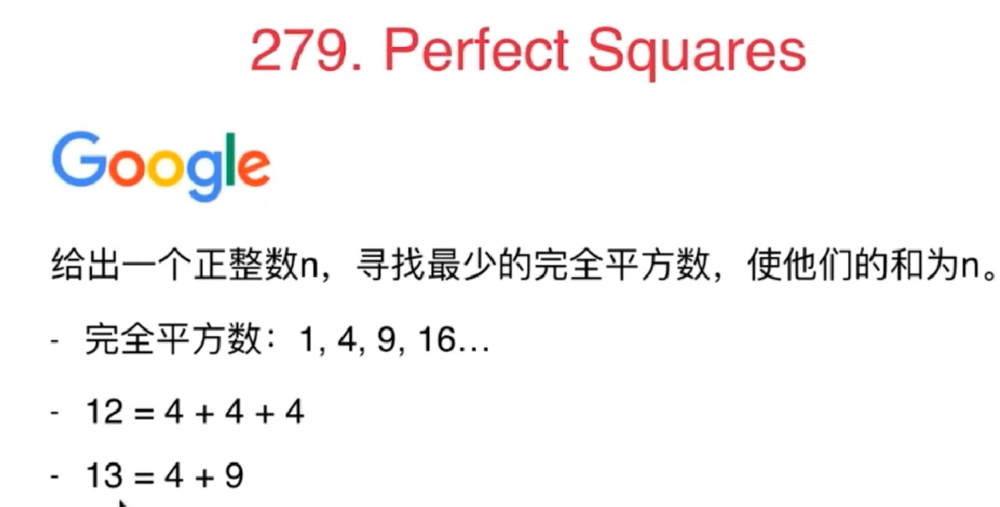
之前有BFS：
class Solution:
def numSquares(self, n: int) -> int:
from collections import deque
deq=deque()
visited=set()
deq.append((n,0))
while deq:
number,step=deq.popleft()
targets=[number-i*i for i in range(1,int(number**0.5)+1)]
for target in targets:
#由于只遍历到(number**0.5)，因此target不可能为负数，因此下面这个判断可省略
#if target<0:
# break
if target==0:return step+1
#if相当于剪枝
#因为之后的每一层也是从1，4，9这样遍历的，那之前的节点值相同，之后一样的遍历过程结果不也相同嘛。记录访问过的节点就类似于剪枝，保留一个记录就好。
if target not in visited:
deq.append((target,step+1))
visited.add(target)
动态规划
class Solution:
import math
def numSquares(self, n: int) -> int:
dp=[0]*(n+1)
#dp[i]表示数字i可以由dp[i]个完全平方数的和来组成
for i in range(1,n+1):
dp[i]=i
j=1
while i-j*j>=0:
dp[i]=min(dp[i],1+dp[i-j**2])
j+=1
return dp[n]
上面的代码超时，把j*2换成jj就过了，可能这样效率更高些：
class Solution:
def numSquares(self, n: int) -> int:
dp = [0]*(n+1)
for i in range(1,n+1):
dp[i]=i
j = 1
while i - j*j>=0:
dp[i] = min(dp[i],dp[i-j*j]+1)
j += 1
return dp[n]

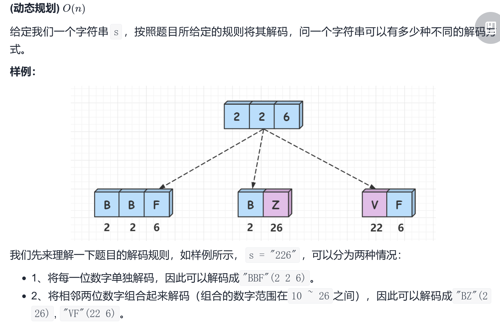
两种情况是或的关系，互不影响，将其相加，那么226共有3种不同的解码方式，下面来讲解动态规划的做法。
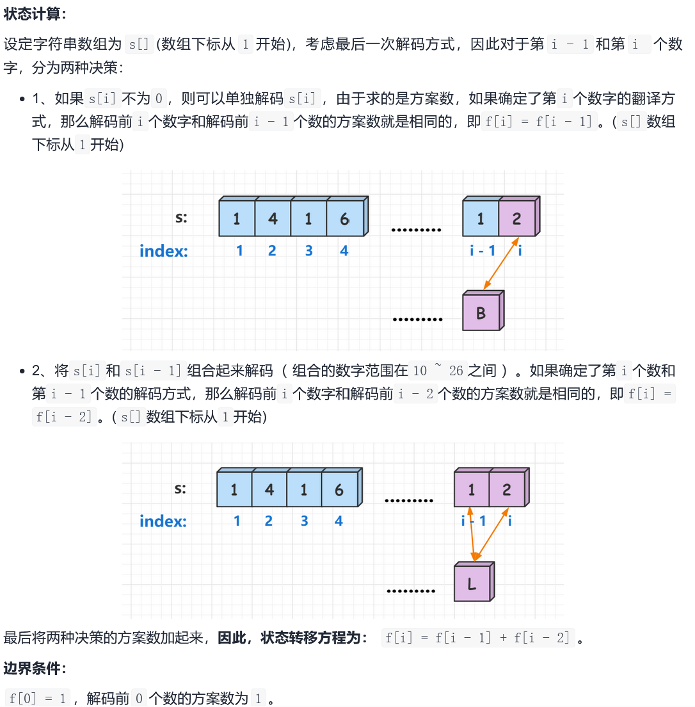
class Solution:
def numDecodings(self, s: str) -> int:
n = len(s)
#设 fi 表示字符串 s 的前 i 个字符 s[1..i] 的解码方法数
f = [1] + [0] * n
for i in range(1, n + 1):
if s[i - 1] != '0':
f[i] += f[i - 1]
if i > 1 and s[i - 2] != '0' and int(s[i-2:i]) <= 26:
f[i] += f[i - 2]
return f[n]
和之前那个有点像，回溯同样超时：
class Solution:
def uniquePaths(self, m: int, n: int) -> int:
def move(x,y):
if x==m-1 and y==n-1:
path.append([x,y])
res.append(path[:])
return
path.append([x,y])
for d in [[0,1],[1,0]]:#向右/下,原点在左上方
newx=x+d[0]
newy=y+d[1]
if 0<=newx<m and 0<=newy<n:
move(newx,newy)
path.pop()
path=[]
res=[]
move(0,0)
print(res)
return len(res)
or另一种
class Solution:
def uniquePaths(self, m: int, n: int) -> int:
#计算从[x][y]位置到达终点的不同路径总数
def move(x,y):
nonlocal res
#找到了一条路径！
if x==m-1 and y==n-1:
res+=1
return
visited[x][y]=1
for d in [[0,1],[1,0]]:#向右/下,原点在左上方
newx=x+d[0]
newy=y+d[1]
if 0<=newx<m and 0<=newy<n and not visited[newx][newy]:
move(newx,newy)
visited[x][y]=0
visited=[[0 for _ in range(n)] for _ in range(m)]
print(visited)
res=0
move(0,0)
return res
个人感觉不加visited也行，因为只能向下或向右走，不会走重复格子。
改成记忆化搜索能AC了：
class Solution:
def uniquePaths(self, m: int, n: int) -> int:
#计算从[x][y]位置到达终点的不同路径总数
def move(x,y):
#找到了一条路径！
if x==m-1 and y==n-1:
return 1
visited[x][y]=1
s=0
for d in [[0,1],[1,0]]:#向右/下,原点在左上方
newx=x+d[0]
newy=y+d[1]
if 0<=newx<m and 0<=newy<n and not visited[newx][newy]:
if memo[newx][newy]!=0:
s+=memo[newx][newy]
else:
s+=move(newx,newy)
visited[x][y]=0
memo[x][y]=s
return memo[x][y]
visited=[[0 for _ in range(n)] for _ in range(m)]
memo=[[0 for _ in range(n)] for _ in range(m)]
return move(0,0)
对于这题，不加visited更快些：
class Solution:
def uniquePaths(self, m: int, n: int) -> int:
#计算从[x][y]位置到达终点的不同路径总数
def move(x,y):
#找到了一条路径！
if x==m-1 and y==n-1:
return 1
#visited[x][y]=1
s=0
for d in [[0,1],[1,0]]:#向右/下,原点在左上方
newx=x+d[0]
newy=y+d[1]
if 0<=newx<m and 0<=newy<n:
if memo[newx][newy]!=0:
s+=memo[newx][newy]
else:
s+=move(newx,newy)
#visited[x][y]=0
memo[x][y]=s
return memo[x][y]
#visited=[[0 for _ in range(n)] for _ in range(m)]
memo=[[0 for _ in range(n)] for _ in range(m)]
return move(0,0)
动态规划解法：
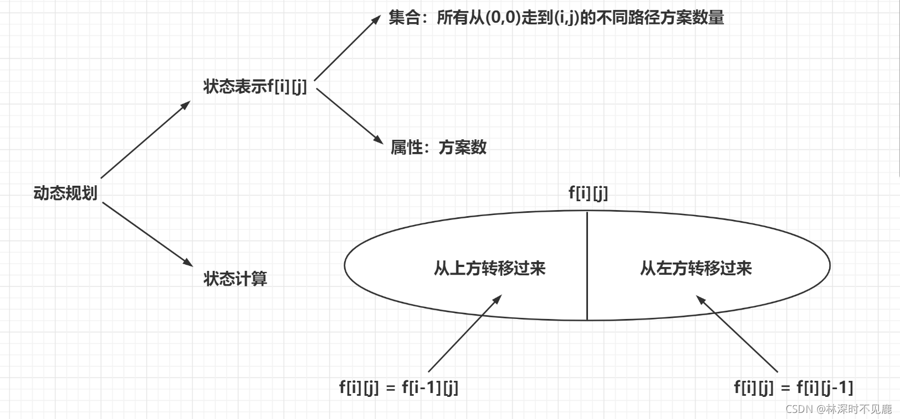
class Solution:
def uniquePaths(self, m: int, n: int) -> int:
#dp[i][j]表示从[0][0]到[i][j]的不同路径数
dp=[[0 for _ in range(n)] for _ in range(m)]
for i in range(m):
for j in range(n):
if i==0 and j==0:
dp[i][j]=1
else:
if i!=0:
dp[i][j]+=dp[i-1][j]#从上方转移过来
if j!=0:
dp[i][j]+=dp[i][j-1]#从左方过来
return dp[m-1][n-1]
or
class Solution:
def uniquePaths(self, m: int, n: int) -> int:
#dp[i][j]表示从[0][0]到[i][j]的不同路径数
dp=[[0 for _ in range(n)] for _ in range(m)]
for i in range(m):
dp[i][0]=1
for j in range(n):
dp[0][j]=1
for i in range(1,m):
for j in range(1,n):
dp[i][j]+=dp[i-1][j]#从上方转移过来
dp[i][j]+=dp[i][j-1]#从左方过来
return dp[m-1][n-1]
时间复杂度：O(m * n)
空间复杂度：O(m * n)
可以用一维数组优化空间，没看懂，不想看：
class Solution:
def uniquePaths(self, m: int, n: int) -> int:
cur = [1] * n #第0行的初始值
for i in range(1, m):
for j in range(1, n):
#cur[j]原本存着i-1行列的值，现在加上第i行第j-1列的值后，cur[j]现在是当前行第i行第j列的值
cur[j] += cur[j-1]
return cur[-1]
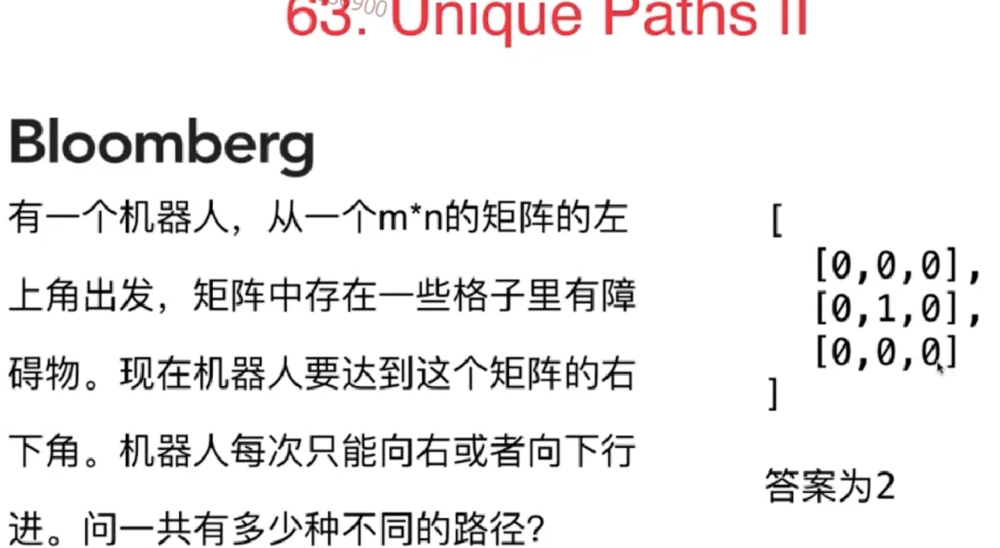
大佬说：有障碍的话，其实就是标记对应的dp table（dp数组）保持初始值(0)就可以了。
注意代码里for循环的终止条件，一旦遇到obstacleGrid[i][0] == 1的情况就停止dp[i][0]的赋值1的操作，dp[0][j]同理。
题是62.不同路径的障碍版，整体思路大体一致。
但就算是做过62.不同路径，在做本题也会有感觉遇到障碍无从下手。
其实只要考虑到，遇到障碍dp[i][j]保持0就可以了。
也有一些小细节，例如：初始化的部分，很容易忽略了障碍之后应该都是0的情况。
class Solution:
def uniquePathsWithObstacles(self, obstacleGrid: List[List[int]]) -> int:
# 构造一个DP table
row = len(obstacleGrid)
col = len(obstacleGrid[0])
dp = [[0 for _ in range(col)] for _ in range(row)]
dp[0][0] = 1 if obstacleGrid[0][0] != 1 else 0
if dp[0][0] == 0: return 0 # 如果第一个格子就是障碍，return 0 （被堵死在起点）
# 第一行
for i in range(1, col):
if obstacleGrid[0][i] != 1:
dp[0][i] = dp[0][i-1]
# 第一列
for i in range(1, row):
if obstacleGrid[i][0] != 1:
dp[i][0] = dp[i-1][0]
print(dp)
for i in range(1, row):
for j in range(1, col):
if obstacleGrid[i][j] != 1:
dp[i][j] = dp[i-1][j] + dp[i][j-1]
return dp[-1][-1]
or
class Solution(object):
def uniquePathsWithObstacles(self, obstacleGrid):
n = len(obstacleGrid)
m = len(obstacleGrid[0])
dp = [[0] * m for _ in range(n)]
#(0,0)这个格子可能有障碍物
dp[0][0] = 0 if obstacleGrid[0][0] else 1
if dp[0][0]==0:
return 0
#处理第一列
for i in range(1, n):
if obstacleGrid[i][0]!= 1:#不是障碍物
if dp[i - 1][0] != 0:#上面也不是障碍物
dp[i][0] = 1
#处理第一行
for j in range(1, m):
if obstacleGrid[0][j] != 1:#不是障碍物
if dp[0][j-1]!=0:#左侧也不是障碍物
dp[0][j] = 1
for i in range(1, n):
for j in range(1, m):
#如果当前格子是障碍物
if obstacleGrid[i][j] == 1:
dp[i][j] = 0
#路径总数来自于上方(dp[i-1][j])和左方(dp[i][j-1])
else:
dp[i][j] = dp[i - 1][j] + dp[i][j - 1]
return dp[-1][-1]
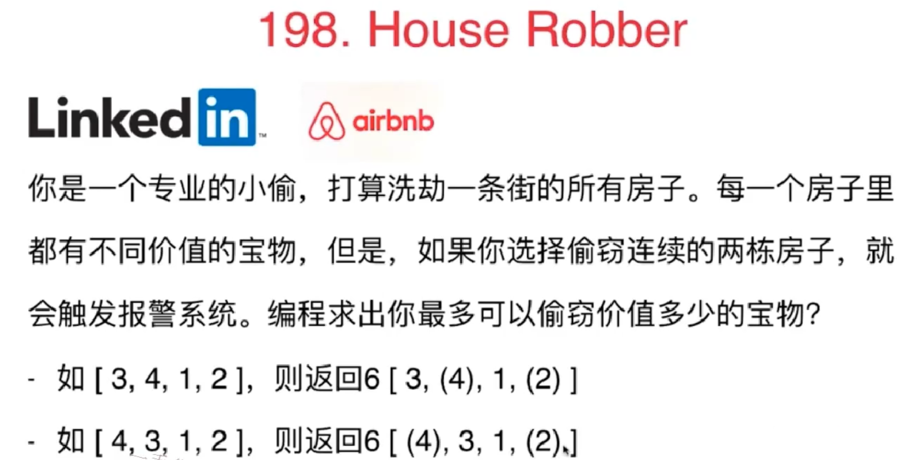
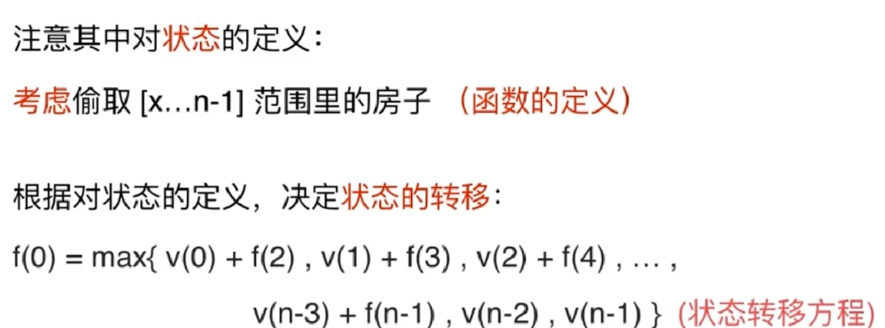
递归超时：
class Solution:
#考虑抢劫nums[index...n]这个范围内的所有房子，index从0开始
def rob(self, nums: List[int]) -> int:
def tryRob(index):
if index>=len(nums):
return 0
res=0
for i in range(index,len(nums)):
res=max(res,nums[i]+tryRob(i+2))
return res
return tryRob(0)
改成记忆化搜索：
class Solution:
def rob(self, nums: List[int]) -> int:
#考虑抢劫nums[index...len(nums)]这个范围内的所有房子
def tryRob(index):
if index>=n:
return 0
if memo[index]!=-1:
return memo[index]
res=0
for i in range(index,n):
res=max(res,nums[i]+tryRob(i+2))
memo[index]=res
return res
n=len(nums)
#memo[i]表示抢劫nums[i..n-1]所能获得的最大收益,i从0开始
memo=[-1]*(n)#不能用0初始化，因为nums是非负数组
return tryRob(0)
动态规划：
class Solution:
def rob(self, nums: List[int]) -> int:
n=len(nums)
if n==0:
return 0
#dp[i]表示抢劫nums[i..n-1]所能获得的最大收益
dp=[-1]*(n)#不能用0初始化，因为nums是非负数组
dp[n-1]=nums[n-1]#从最后一间偷，只能偷最后一间
for i in range(n-2,-1,-1):
#求dp[i]
for j in range(i,n):
if j+2>=n:
dp[i]=max(dp[i],nums[j])
else:
dp[i]=max(dp[i],nums[j]+dp[j+2])
return dp[0]

递归超时：
class Solution:
#考虑抢劫nums[0...index]这个范围内的所有房子，index从0开始
def rob(self, nums: List[int]) -> int:
def tryRob(index):
if index<0:
return 0
res=0
for i in range(index,-1,-1):
res=max(res,nums[i]+tryRob(i-2))
return res
return tryRob(len(nums)-1)
改成记忆化搜索：
class Solution:
#考虑抢劫nums[0...index]这个范围内的所有房子，index从0开始
def rob(self, nums: List[int]) -> int:
def tryRob(index):
if index<0:
return 0
if memo[index]!=-1:
return memo[index]
res=0
for i in range(index,-1,-1):
res=max(res,nums[i]+tryRob(i-2))
memo[index]=res
return res
memo=[-1]*len(nums)
return tryRob(len(nums)-1)
动态规划：
class Solution:
def rob(self, nums: List[int]) -> int:
if not nums:
return 0
size = len(nums)
if size == 1:
return nums[0]
#dp[i]表示抢劫nums[0...i]所能获得的最大收益
dp = [0] * size
dp[0] = nums[0]
dp[1] = max(nums[0], nums[1])
for i in range(2, size):
dp[i] = max(dp[i - 2] + nums[i], dp[i - 1])
return dp[size - 1]
或者，用习惯的，多开一位数组：
class Solution:
def rob(self, nums: List[int]) -> int:
if not nums:
return 0
size = len(nums)
if size == 1:
return nums[0]
#dp[i]表示抢劫nums[0...i]所能获得的最大收益,i从1开始，最大为size，即房屋总数
dp = [0] * (size+1)
dp[1] = nums[0]
dp[2] = max(nums[0], nums[1])
for i in range(3, size+1):
dp[i] = max(dp[i - 2] + nums[i-1], dp[i - 1])
return dp[size]
课后习题


看了官方题解＋评论区后自己写的：
class Solution:
def rob(self, nums: List[int]) -> int:
n=len(nums)
if n==0:
return 0
if n==1:
return nums[0]
if n==2:
return max(nums[0],nums[1])
#dp[i]:偷前i间所能获得的最大收益,i从1开始
#不偷最后一间:[1..n-1]
dp1=[0]*(n+1)
dp1[1]=nums[0]
dp1[2]=max(nums[0],nums[1])
for i in range(3,n):
dp1[i]=max(dp1[i-1],dp1[i-2]+nums[i-1])
#不偷第一间:[2...n]
dp2=[0]*(n+1)
dp2[2]=nums[1]
dp2[3]=max(nums[1],nums[2])
for i in range(4,n+1):
dp2[i]=max(dp2[i-1],dp2[i-2]+nums[i-1])
return max(dp1[n-1],dp2[n])
注意dp和nums下标差1。

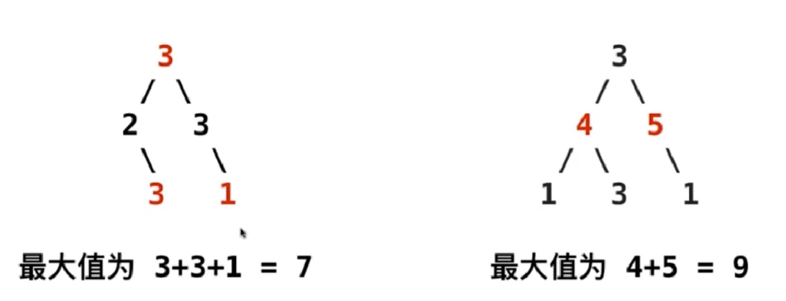
与198.打家劫舍，213.打家劫舍II一样，关键是要讨论当前节点抢还是不抢。
如果抢了当前节点，两个孩子就不能动，如果没抢当前节点，就可以考虑抢左右孩子（注意这里说的是“考虑”）
暴力递归，超时：
# Definition for a binary tree node.
# class TreeNode:
# def __init__(self, val=0, left=None, right=None):
# self.val = val
# self.left = left
# self.right = right
class Solution:
def rob(self, root: TreeNode) -> int:
if root is None:
return 0
if root.left is None and root.right is None:
return root.val
# 偷父节点
val1 = root.val
if root.left:
val1 += self.rob(root.left.left) + self.rob(root.left.right)
if root.right:
val1 += self.rob(root.right.left) + self.rob(root.right.right)
# 不偷父节点
val2 = self.rob(root.left) + self.rob(root.right)
return max(val1, val2)
记忆化搜索：
# Definition for a binary tree node.
# class TreeNode:
# def __init__(self, val=0, left=None, right=None):
# self.val = val
# self.left = left
# self.right = right
class Solution:
memory = {}#从key出发能偷到的最大收益
def rob(self, root: TreeNode) -> int:
if root is None:
return 0
if root.left is None and root.right is None:
return root.val
if self.memory.get(root) is not None:
return self.memory[root]
# 偷父节点
val1 = root.val
if root.left:
val1 += self.rob(root.left.left) + self.rob(root.left.right)
if root.right:
val1 += self.rob(root.right.left) + self.rob(root.right.right)
# 不偷父节点
val2 = self.rob(root.left) + self.rob(root.right)
self.memory[root] = max(val1, val2)
return max(val1, val2)
动态规划：
在上面两种方法，其实对一个节点 偷与不偷得到的最大金钱都没有做记录，而是需要实时计算。
而动态规划其实就是使用状态转移容器来记录状态的变化，这里可以使用一个长度为2的数组，记录当前节点偷与不偷所得到的的最大金钱。
首先明确的是使用后序遍历。 因为通过递归函数的返回值来做下一步计算。
通过递归左节点，得到左节点偷与不偷的金钱。
通过递归右节点，得到右节点偷与不偷的金钱。
# Definition for a binary tree node.
# class TreeNode:
# def __init__(self, val=0, left=None, right=None):
# self.val = val
# self.left = left
# self.right = right
class Solution:
def rob(self, root: TreeNode) -> int:
result = self.rob_tree(root)
return max(result)
def rob_tree(self, node):
if node is None:
return (0, 0) # (偷当前节点金额，不偷当前节点金额)
left = self.rob_tree(node.left)
right = self.rob_tree(node.right)
val1 = node.val + left[1] + right[1] # 偷当前节点，不能偷子节点
val2 = max(left[0], left[1]) + max(right[0], right[1]) # 不偷当前节点，可偷可不偷子节点
return (val1, val2)

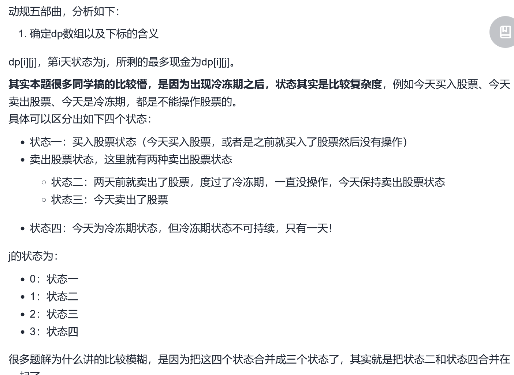
从代码上来看确实可以合并，但从逻辑上分析合并之后就很难理解了，所以我下面的讲解是按照这四个状态来的，把每一个状态分析清楚。
注意这里的每一个状态，例如状态一，是买入股票状态并不是说今天已经就买入股票，而是说保存买入股票的状态即：可能是前几天买入的，之后一直没操作，所以保持买入股票的状态。

贪心算法有问题。

对于新到来的物品，考虑两种情况：放入背包or不放入背包，选择两者中能使得价值最大的一种
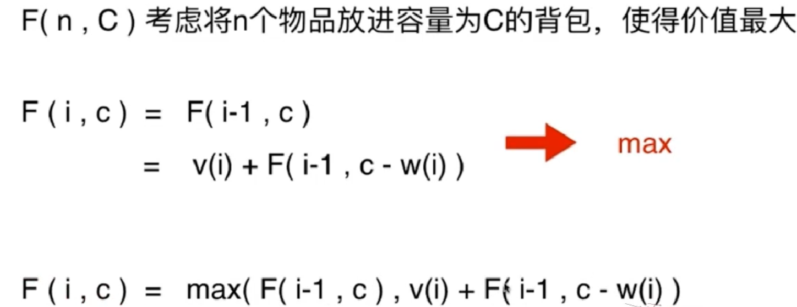
暴力递归：
记忆化搜索：
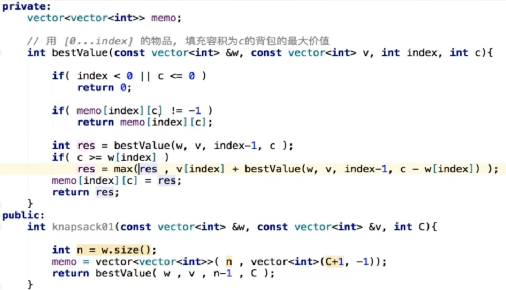
动态规划：
行是3个物品，列是0到5，代表背包剩余可容纳重量。
第一行，只考虑物品0，第一行，考虑物品0和1，第三行，考虑物品0，1和2.
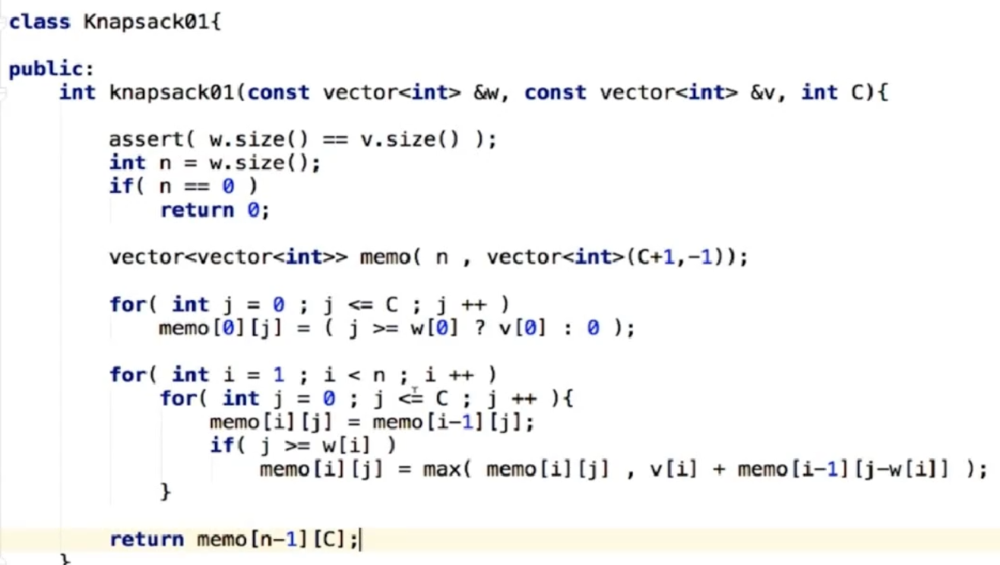
第一列全0，第1行先初始化，然后算个for里面的剩余行。
dp[i][j]：只考虑前[0…i]个物品，背包当前所能容纳的重量为j时，所能获取的最大价值。
打家劫舍是一维的dp，背包问题是二维的dp.
0-1背包空间优化。
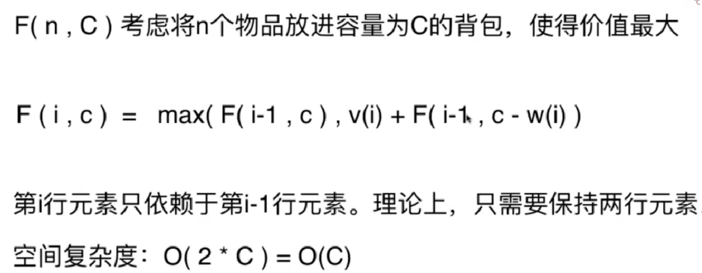
上面一行永远在处理行数为奇数的结果，下面一行永远在处理行数为偶数的结果：
只需要变动memo，修改后代码：
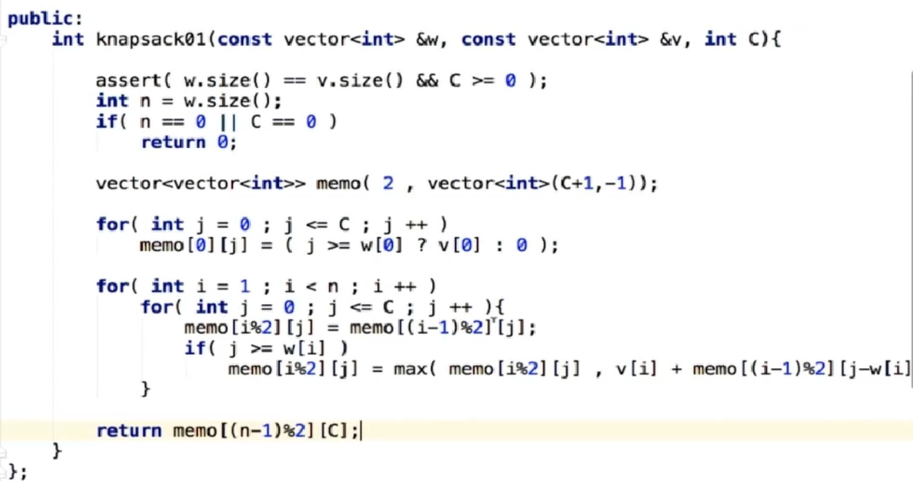
继续优化：
从右侧向左更新下一行，就可以了，代码修改如下：
更多背包变种：
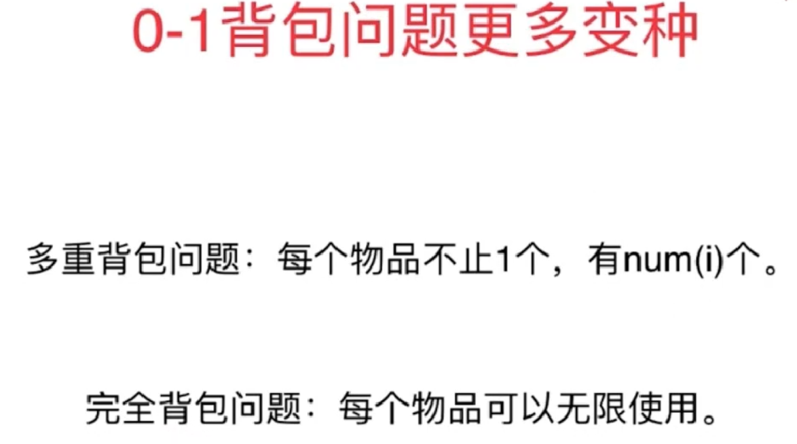

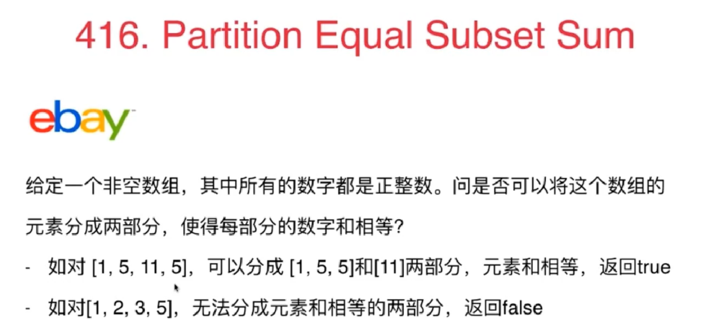
不装入第i个已经满足 or 装入第i个恰好满足。
暴力递归超时：
class Solution:
def canPartition(self, nums: List[int]) -> bool:
s=sum(nums)
if s%2!=0:#此时不能平分
return False
#使用nums[0...index]是否可以完全填充一个容量为sum的背包
def tryPartition(nums,index,sum):
if sum==0:
return True
if sum<0 or index<0:#容量不足or物品装光了，还没装满
return False
return tryPartition(nums,index-1,sum) or tryPartition(nums,index-1,sum-nums[index])
return tryPartition(nums,len(nums)-1,s/2)
改成记忆化搜索：
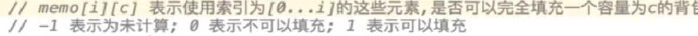
代码不能ac，明明仿着视频写的：
class Solution:
def canPartition(self, nums: List[int]) -> bool:
s=sum(nums)
if s%2!=0:#此时不能平分
return False
#使用nums[0...index]是否可以完全填充一个容量为s的背包
def tryPartition(nums,index,s):
if s==0:
return True
if s<0 or index<0:#容量不足or
return False
if memo[index][s]!=-1:
return memo[index][s]
memo[index][s]=(tryPartition(nums,index-1,s) or tryPartition(nums,index-1,s-nums[index]))
return memo[index][s]
memo=[[-1]*(s//2+1)]*len(nums)
return tryPartition(nums,len(nums)-1,s//2)
把memo初始化用for _ in range(len(nums))就能过：
class Solution:
def canPartition(self, nums: List[int]) -> bool:
s=sum(nums)
if s%2!=0:#此时不能平分
return False
#使用nums[0...index]是否可以完全填充一个容量为s的背包
def tryPartition(nums,index,s):
if s==0:
return True
if s<0 or index<0:#容量不足or
return False
if memo[index][s]!=-1:
return memo[index][s]
#不拿or拿第index个物品
memo[index][s]=(tryPartition(nums,index-1,s) or tryPartition(nums,index-1,s-nums[index]))
return memo[index][s]
memo=[[-1]*(s//2+1) for _ in range(len(nums))]#共len(nums)个物品(行)，从0到len(nums)-1，背包容量从0到s//2(列)
return tryPartition(nums,len(nums)-1,s//2)
动态规划，评论区答案
同样初始化dp数组时，不能用dp=[False for _ in range(target+1)] *(n+1)，而是用dp=[[False for _ in range(target+1)] for _ in range(n+1)]
class Solution:
def canPartition(self, nums: List[int]) -> bool:
n = len(nums)
sums = sum(nums)
if sums % 2 != 0:
return False
target = sums // 2
dp=[[False for _ in range(target+1)] for _ in range(n+1)]
dp[0][0]=True
for i in range(1, n + 1):
for j in range(1, target + 1):
num = nums[i - 1]
if j >= num:
dp[i][j] = dp[i - 1][j] | dp[i - 1][j - num]
else:
dp[i][j] = dp[i - 1][j]
return bool(dp[-1][-1])
我也不知道为什么那样初始化就不能过，先记着吧，以后都用能过的那种初始化.
动态规划更清晰的答案：n*(target+1)的矩阵，先初始化了第0行和第0列
class Solution:
def canPartition(self, nums: List[int]) -> bool:
n = len(nums)
sums = sum(nums)
if sums % 2 != 0:
return False
target = sums // 2
#dp[i][j]: 从前i个物品中选择一些物品，背包容量为j能不能恰好装满背包
dp=[[False for _ in range(target+1)] for _ in range(n)]
#当背包容量为0时，全为True（初始化第0列）
for i in range(n):
dp[i][0] = True
#初始化第0行，此时仅仅考虑第0个物品能不能装的下(初始化第0行)
for j in range(target+1):
if j==nums[0]:
dp[0][j]=True
for i in range(1, n ):
num = nums[i]
for j in range(1,target + 1):
#当前背包容量能够装入物品i，有两种选择：装or不装
if j >= num:
dp[i][j] = dp[i - 1][j] | dp[i - 1][j - num]
else:
dp[i][j] = dp[i - 1][j]
return bool(dp[-1][-1])
总结 ：
https://www.bilibili.com/video/BV15v411y7Qz/?spm_id_from=trigger_reload
0-1背包：
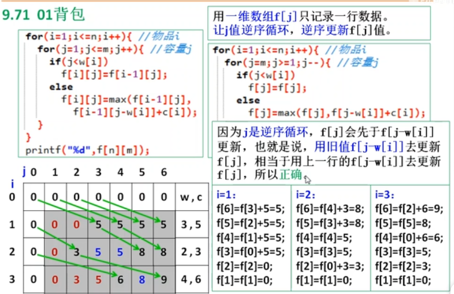
完全背包：
对比：
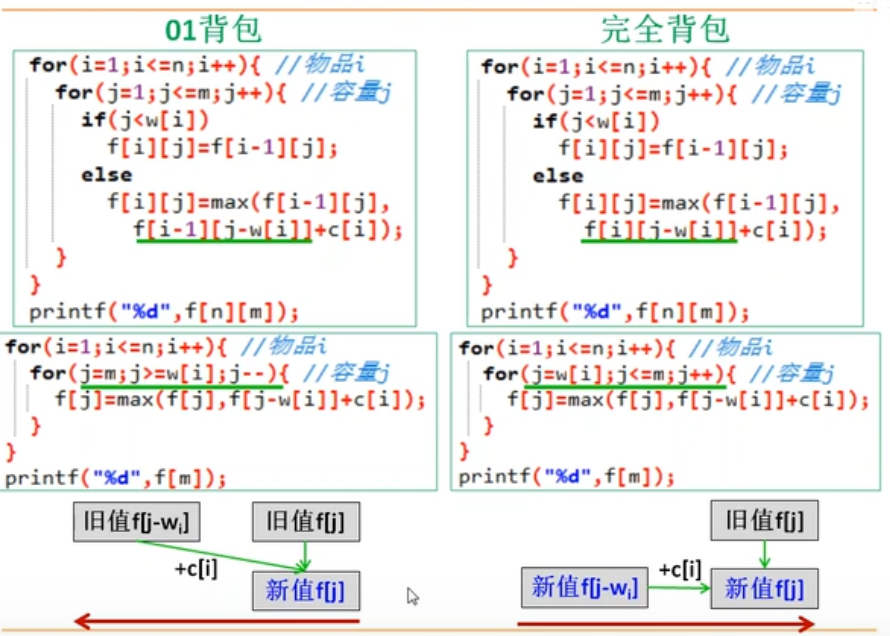
在完全背包中，如果拿第i个物品，那么第i个物品之前也可能已经被拿过，因为物品可以无限次拿嘛。
课后习题
题目中说每种硬币的数量是无限的，可以看出是典型的完全背包问题。
class Solution:
def coinChange(self, coins: List[int], amount: int) -> int:
n = len(coins)
#dp[i][j] 表示从[0,i]个硬币中需要选取硬币总和为j的个数
# 默认值 改为10001，则如果不能凑成硬币的时候，一定不会从该状态获取
dp = [[10001] * (amount + 1) for _ in range(n + 1)]
# 初始化：当amount = 0 时，硬币个数为0
for i in range(n + 1):
dp[i][0] = 0
for i in range(1, n + 1):#物品(硬币)
for j in range(1, amount + 1):#背包(amount)
coin = coins[i - 1]
# 如果硬币面值大于amount，或者是当前amount不能由上一个j - coin得到，则从上一个状态转移
if coin > j:
dp[i][j] = dp[i - 1][j]
else:
dp[i][j] = min(dp[i][j - coin] + 1, dp[i - 1][j])#拿or不拿
return dp[n][amount] if dp[n][amount] != 10001 else -1
空间优化：
class Solution:
def coinChange(self, coins: List[int], amount: int) -> int:
n = len(coins)
#dp[j] 表示从[0,i]个硬币中需要选取硬币总和为j的个数
dp = [10001] * (amount + 1)
# 初始化：当amount = 0 时，硬币个数为0
dp[0] = 0
for i in range(1, n + 1):
coin = coins[i - 1]
for j in range(1,amount + 1):
if j<coin:#背包满了
dp[j]=dp[j]
else:
dp[j] = min(dp[j - coin] + 1, dp[j])#拿or不拿
return dp[amount] if dp[amount] != 10001 else -1
再优化：
class Solution:
def coinChange(self, coins: List[int], amount: int) -> int:
n = len(coins)
#dp[j] 表示从[0,i]个硬币中需要选取硬币总和为j的个数
dp = [10001] * (amount + 1)
# 初始化：当amount = 0 时，硬币个数为0就ok了
dp[0] = 0
for i in range(1, n + 1):
coin = coins[i - 1]
for j in range(coin,amount + 1):
dp[j] = min(dp[j - coin] + 1, dp[j])#拿or不拿
return dp[amount] if dp[amount] != 10001 else -1
相似的题目是518题，凑零钱2：
给你一个整数数组 coins 表示不同面额的硬币，另给一个整数 amount 表示总金额。
请你计算并返回可以凑成总金额的硬币组合数。如果任何硬币组合都无法凑出总金额，返回 0 。
假设每一种面额的硬币有无限个。
题目数据保证结果符合 32 位带符号整数。
示例 1：
输入：amount = 5, coins = [1, 2, 5]
输出：4
解释：有四种方式可以凑成总金额：
5=5
5=2+2+1
5=2+1+1+1
5=1+1+1+1+1
示例 2：
输入：amount = 3, coins = [2]
输出：0
解释：只用面额 2 的硬币不能凑成总金额 3 。
示例 3：
输入：amount = 10, coins = [10]
输出：1
这题要求的是方案总数，在之前代码的基础上改改。
初始化为全0，第一列，当背包容量为0时，也就是amount为0时，有且只有一种方案，那就是用0个硬币，因此第一列初始化为1.
当背包容量够时，拿第i个硬币与不拿第i个硬币的方案数之和才是最终的dp[i][j]:
dp[i][j] = dp[i][j - coin] + dp[i - 1][j]
class Solution:
def change(self, amount: int, coins: List[int]) -> int:
n = len(coins)
#dp[i][j]表示使用前i种硬币凑出j的方案数
dp = [[0] * (amount + 1) for _ in range(n + 1)]
#amount为0时，不需要凑，算一种方案，且只有这一种方案
for i in range(n + 1):
dp[i][0] = 1
for i in range(1, n + 1):#物品(硬币)
for j in range(1, amount + 1):#背包(amount)
coin = coins[i - 1]
# 如果硬币面值大于amount，或者是当前amount不能由上一个j - coin得到，则从上一个状态转移
if coin > j:
dp[i][j] = dp[i - 1][j]
else:
dp[i][j] = dp[i][j - coin] + dp[i - 1][j] #拿or不拿硬币i的方案数之和
return dp[n][amount]
空间优化：
class Solution:
def change(self, amount: int, coins: List[int]) -> int:
n = len(coins)
#dp[j] 表示从[0,i]个硬币中需要选取硬币总和为j的方案数
dp = [0] * (amount + 1)
# 初始化：当amount = 0 时，硬币个数为0，算一种方案
dp[0] = 1
for i in range(1, n + 1):
coin = coins[i - 1]
for j in range(1,amount + 1):
if j<coin:#背包满了
dp[j]=dp[j]
else:
dp[j] = dp[j - coin] + dp[j]#拿or不拿
return dp[amount]
再优化：
class Solution:
def change(self, amount: int, coins: List[int]) -> int:
n = len(coins)
#dp[j] 表示从[0,i]个硬币中需要选取硬币总和为j的方案数
dp = [0] * (amount + 1)
# 初始化：当amount = 0 时，硬币个数为0，算一种方案
dp[0] = 1
for i in range(1, n + 1):
coin = coins[i - 1]
for j in range(coin,amount + 1):
dp[j] = dp[j - coin] + dp[j]#拿or不拿
return dp[amount]
以上两题都是行遍历物品（硬币），第0行表示考虑前0个物品，因此不需要处理。这是动态规划的一个trick.
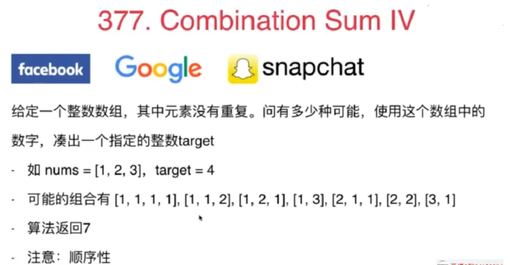
这题之前的版本(1,2,3,4)都是用回溯法做的。
本题题目描述说是求组合，但又说是可以元素相同顺序不同的组合算两个组合，其实就是求排列！
组合不强调顺序，(1,5)和(5,1)是同一个组合。
排列强调顺序，(1,5)和(5,1)是两个不同的排列。
个数可以不限使用，说明这是一个完全背包。
但不完全是
。。。太难了。。。
不懂，官方答案：
class Solution:
def combinationSum4(self, nums: List[int], target: int) -> int:
#用 dp[i]表示选取的元素之和等于i的方案数，目标是求 dp[target]，初始化dp[0]=1
dp = [1] + [0] * target
for i in range(1, target + 1):
for num in nums:
if num <= i:
dp[i] += dp[i - num]
return dp[target]
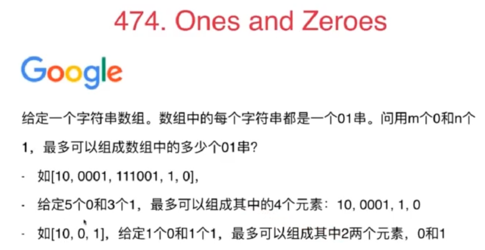
不会

不会，不会，不会

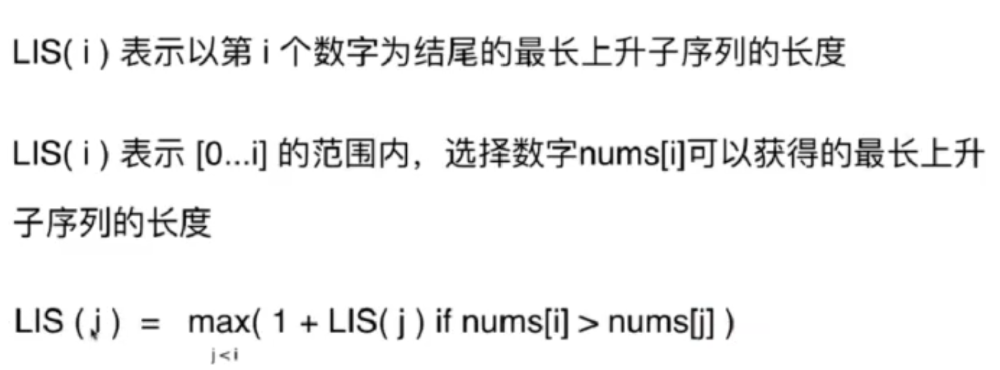

这题还好：
class Solution:
def lengthOfLIS(self, nums: List[int]) -> int:
n=len(nums)
#dp[i]表示包含nums[i]在内可以得到的最长递增子序列长度为dp[i]
dp=[1 for _ in range(n)]#一个数字对应结果为1
#初始化dp[0]
dp[0]=1
for i in range(1,n):
for j in range(0,i):
if nums[j] < nums[i]:
dp[i]=max(dp[i],dp[j]+1)
return max(dp)
课后习题：
评论区大佬的解法，很清晰，我加了注释：
class Solution:
def wiggleMaxLength(self, nums: List[int]) -> int:
n=len(nums)
if n==1 or (n==2 and nums[0]!=nums[1]):
return n
#dp[i][0]表示以nums[i]结尾且当前位置为降序的最长摆动序列的长度,dp[i][1]表示以nums[i]结尾且当前位置为升序的最长摆动序列的长度
dp = [[1 for i in range(2)] for j in range(n)]
res=[]
res.append(dp[0][0])
res.append(dp[0][1])
for i in range(1,n):
for j in range(0,i):
#以nums[i]结尾且当前位置为升序
if nums[i] > nums[j]:
#到nums[i]是升序了，那么前面必然得是降序的，因此考虑的是dp[j][0]
dp[i][1] = max(dp[i][1],dp[j][0]+1)
#以nums[i]结尾且当前位置为降序
elif nums[i] < nums[j]:
#到nums[i]是升序了，那么前面必然得是降序的，因此考虑的是dp[j][1]
dp[i][0] = max(dp[i][0],dp[j][1]+1)
#nums[i]=nums[j]，此时nums[i]不可能加在nums[j]后面
else:
continue
res.append(dp[i][0])
res.append(dp[i][1])
return max(res)
优化
up结尾的摆动序列是由最长的以down结尾的序列转化过来
down结尾的摆动序列是由最长的以up结尾的序列转化过来
下面这种方法up和down分别记录了末尾up结尾的最长摆动序列和down结尾的最长摆动序列
class Solution:
def wiggleMaxLength(self, nums: List[int]) -> int:
n=len(nums)
if n<2:
return n
up=[nums[0]]
down=[nums[0]]
for i in range(1,n):
if nums[i]>nums[i-1]:
up=down+[nums[i]]
elif nums[i]<nums[i-1]:
down=up+[nums[i]]
else:
continue
return max(len(up),len(down))
更多动态规划的问题。
最长公共子序列(LCS)
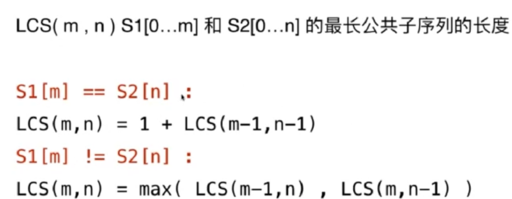
dijkstra 单源最短路径算法也是动态规划
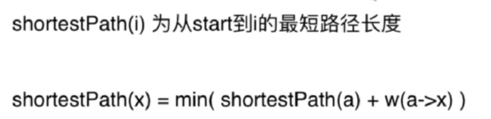


class Solution:
def findContentChildren(self, g: List[int], s: List[int]) -> int:
g=sorted(g,reverse=True)
s=sorted(s,reverse=True)
res=0
si,gi=0,0#si初始指向最大的饼干，gi初始指向最贪心的小朋友
while gi <len(g) and si<len(s):
if s[si]>=g[gi]:
res+=1
si+=1
gi+=1
else:#无法满足当前最贪心的小朋友，于是尝试满足次贪心小朋友
gi+=1
return res
课后习题
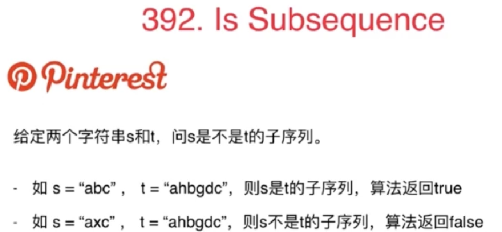
这解法有双指针那味了。。。
class Solution:
def isSubsequence(self, s: str, t: str) -> bool:
si,ti=0,0
while si<len(s) and ti<len(t):
if s[si]==t[ti]:
si+=1
ti+=1
else:
ti+=1
return si==len(s)
贪心算法和动态规划的关系。
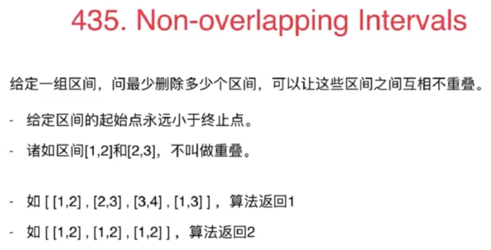
使用动态规划，类似最长上升子序列：
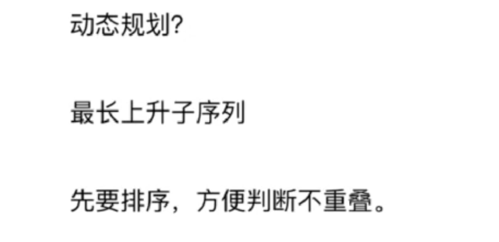
超时：
class Solution:
def eraseOverlapIntervals(self, intervals: List[List[int]]) -> int:
intervals=sorted(intervals)
#print(intervals)
n=len(intervals)
dp=[1 for _ in range(n)]
#dp[0]=1#单个是1
for i in range(1,n):
#求dp[i]
for j in range(0,i):
if intervals[j][1]<=intervals[i][0]:
dp[i]=max(dp[i],1+dp[j])
return n-max(dp)
AC：
class Solution:
def eraseOverlapIntervals(self, intervals: List[List[int]]) -> int:
intervals.sort(key=lambda x:x[0])
print(intervals)
n=len(intervals)
dp=[1 for _ in range(n)]
#dp[0]=1#单个是1
for i in range(1,n):
#求dp[i]
for j in range(i-1,-1,-1):
if intervals[j][1]<=intervals[i][0]:
dp[i]=max(dp[i],1+dp[j])
break
return n-max(dp)
官方也超时：
class Solution:
def eraseOverlapIntervals(self, intervals: List[List[int]]) -> int:
if not intervals:
return 0
intervals.sort()
n = len(intervals)
f = [1]
for i in range(1, n):
f.append(max((f[j] for j in range(i) if intervals[j][1] <= intervals[i][0]), default=0) + 1)
return n - max(f)
使用贪心算法
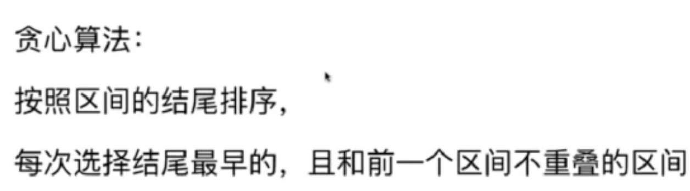
class Solution:
def eraseOverlapIntervals(self, intervals: List[List[int]]) -> int:
if not intervals:
return 0
intervals.sort(key=lambda x:x[1])
print(intervals)
n=len(intervals)
res=1
pre=0
for i in range(1,n):
if intervals[pre][1]<=intervals[i][0]:
res+=1
pre=i
return n-res
参考：